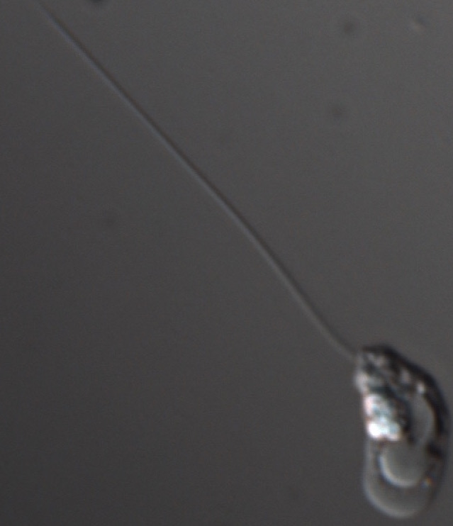

Welcome to chytrids.org!
This website is a work in progress to provide access to protocols we are currently developing for genetic manipulation of Chytrid fungi. This includes resources of the species: Batrachochytrium dendrobatidis, B. salamandrivorans, Spizellomyces sp. and Rhizoclosmatium globosum.
We are currently developing useful tools, including improved growth medium, robust freezing protocols, and molecular transformation, and will share protocols here as they become available.
Please see our protocols.io - chytrids
Watch this space!
What are chytrid fungi?
Although most fungi are sessile, the early-diverging chytrid fungi form distinctive zoospores--a single-celled life stage that swim using a flagellum. These "zoosporic fungi" were first grouped as a single phylum but were later shown to be paraphyletic, and now are classified in two distinct phyla (Figure 1), the Blastocladiomycota and Chytridiomycota (James, Kauff, et al. 2006; James, Letcher, et al. 2006).
Chytrid fungi are a diverse group of approximately 1000 species that occupy diverse environmental niches. Two species are important pathogens of animals. Batrachochytrium dendrobatidis is emerging infectious disease of amphibians with worldwide distribution (Fisher, Garner, et al. 2009). Batrachochytrium salamandrivorans is an even more recently described emerging pathogen found in Europe (Martel et al. 2013; Spitzen-van der Sluijs et al. 2016) which has the depressing potential to ravage North American salamander populations (Martel et al. 2014; Yap et al. 2015; Gray et al. 2015).
We are collaborating laboratories currently developing chytrids as "model organisms", including molecular transformation, gene disruption, and CRISPR technologies:
Lillian Fritz-Laylin (U. Mass-Amherst): expert in flagellar and amoeboid motility, comparative genomics, and deep eukaryotic evolution.
Tim James (U Michigan): expert in chytrid biology, taxonomy & systematics, evolution, mycology
Jason Stajich (U. California-Riverside): expert in mycology, bioinformatics, molecular evolution and phylogenetics, and functional and evolutionary genomics.
Some useful resources